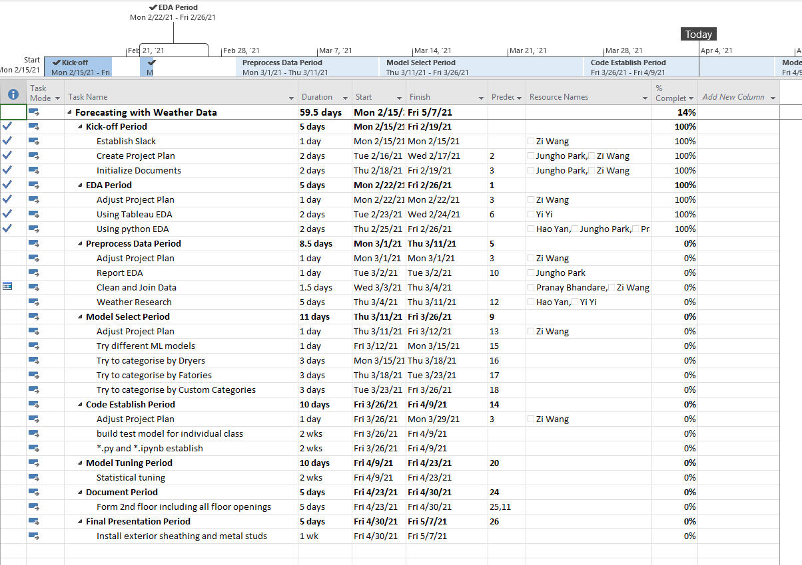

A Generic Page


Figure: Flowchart.
Summary
Sprak-Tek is a dryer company that processing raw material, like powder and starch. Sprak-Tek used dryers to extract moisture from raw material and trid to get smallers particle. From the Flowchart, you can see two main data pipeline, the upper pipeline contains import and most of data preprocessing. The lower pipline
Data Analysis
Our team need to find the weather impact to the dryer system. We got product data, New Jersey wetaher data, and Pennsylvania weather three datasets. By function model discriminate, we did the following pipline.
- Import data from production data from engineering department and weather data from Openweather.org
- Convert time columns from UNIX system and other timezone into uniform Eastern Stardard Time
- During cleaning data process, we discard missing value which output from EDA process.
- In order to do further statistical analysis, we need make sure that all the error data or outliers will be deducted.
- For the abnormal detection model, we apply z-socre for Gaussian distribution and IQR outlier for non-Gaussian distribution
Machine Learning
- After preprocessing, we merge production data with weather data and we got multi-rows for each records sequenced by hours
- If we look at our data into sequence, its more like time series datatype which got consequence after reading a series data point
- So we use feature engineering to capture the characteristics of this time sequence data
- Feature scaler train data with standardlization and label data with normalization, which we need restrict label between [0,1]
- Using neural network got 75% classification result without significant overfitting
Project Management

Figure: Microsoft Project Gantt.
- We have two teams that responsible for weather impact and schedule optimeze seperatelty.